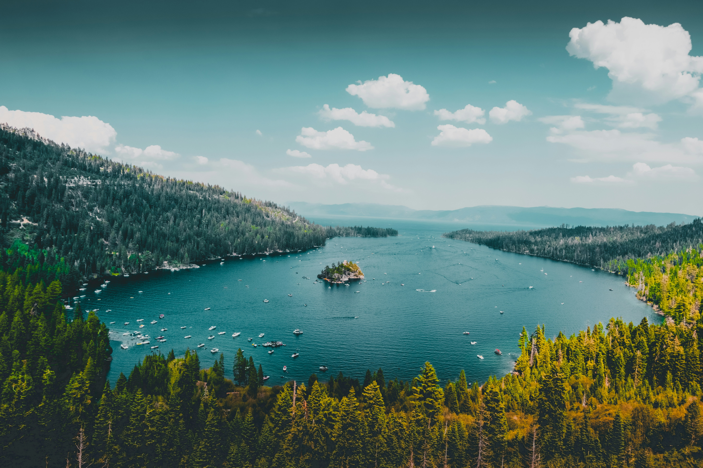

Last winter, I went to Lake Tahoe with my family. The mountains were covered with snow and looked very beautiful. The air was cold and fresh. It was a nice break from the city.
We played in the snow and walked near the frozen lake. The sun made the ice shine. I also watched people ski and snowboard. I did not ski, but it was fun to watch.
In the evening, we sat by the fireplace, told stories, and drank hot chocolate. This trip showed me how important it is to spend time with family and enjoy nature. I want to go back to Lake Tahoe again.

MDN Web Docs – HTML Reference | retrieved 09/23/2025
CSS Styling – retrieved 09/20/2025
Lake Tahoe Winter Activities – retrieved 09/23/2025
Image Sources – retrieved 09/20/2025